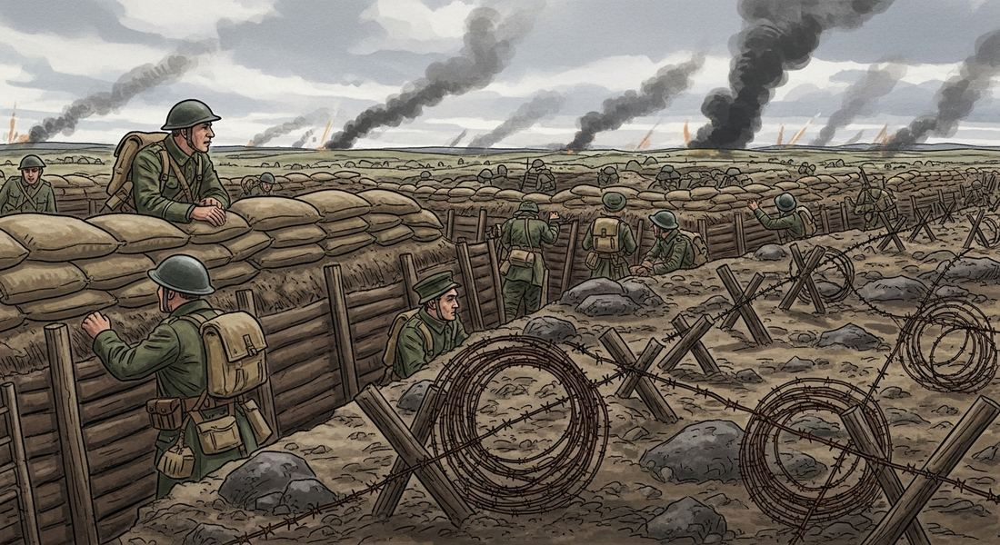
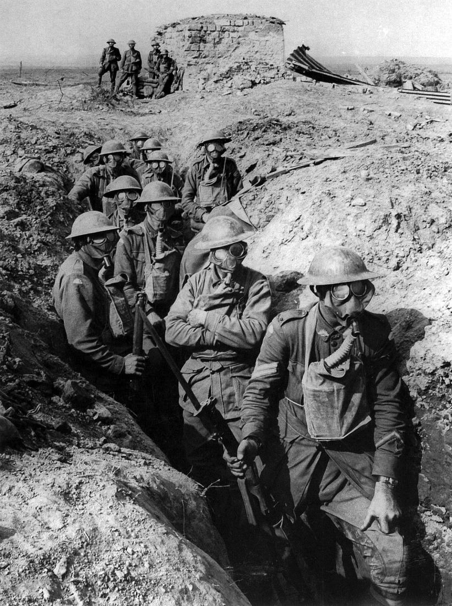

7.3 Conducting World War I
- LO-A: Total war: the whole nation fights, not just the army: WWI was the first "total war". It required mobilizing entire economies, societies, and populations for war production. Governments rationed food, nationalized industries, conscripted millions of men, and organized women into war work. The distinction between soldiers and civilians blurred: everyone contributed, and everyone was a target. Propaganda: governments manufactured consent: No government could fight a long war without sustained public support. Governments across Europe and their colonial empires used posters, newspapers, films, and public ceremonies to portray their cause as righteous and the enemy as barbaric. British propaganda about German atrocities in Belgium ("the rape of Belgium") helped bring the U.S. into the war. Colonial subjects in India, Africa, and Southeast Asia were mobilized through propaganda promising better treatment after the war. New technology = unprecedented death: WWI introduced industrial-scale killing: machine guns (one could fire 400–600 rounds/minute, the equivalent of 100 riflemen), poison gas (chlorine, phosgene, mustard gas), artillery barrages, tanks, airplanes, and submarines. The result was a war of attrition in which battles costing hundreds of thousands of casualties produced movements of a few miles. The Battle of the Somme (1916): 60,000 British casualties on the first day alone. Colonies mobilized: war was global: Britain, France, and Germany mobilized their colonial subjects for the war effort. India contributed 1.5 million soldiers. West Africa, North Africa, and Southeast Asia provided soldiers, laborers, and resources. The war's costs were paid disproportionately by colonial peoples who had no say in causing it, a key grievance fueling postwar anti-colonial movements.
Try each question before revealing the answer.
1. What makes a war "total", and why is WWI considered the first total war in history?
2. Why did trench warfare produce such massive casualties without producing decisive victories?
3. WWI governments used propaganda to mobilize populations for war. What does the need for propaganda tell us about the nature of democratic or semi-democratic governments fighting modern wars?
4. Britain mobilized 1.5 million soldiers from India and hundreds of thousands more from Africa and other colonies. What implications did this colonial mobilization have for postwar anti-colonial movements?
5. Poison gas was widely condemned as a barbaric weapon during and after WWI. Why did governments that condemned its use continue to use it?
- Explain how governments used a variety of methods to conduct World War I, including propaganda, total war mobilization, and new military technology that led to unprecedented casualties
Tap a term for its definition.
-
Definition: A war in which the entire society, economy, industry, agriculture, media, and civilian population, is mobilized for the war effort, blurring the line between military and civilian life. Significance: WWI was the first total war; governments rationed food, nationalized industry, conscripted millions, and mobilized colonial populations.
-
Definition: A style of warfare in which opposing armies dug extensive networks of trenches for protection, producing a static front line that barely moved for years. Significance: Characterized the Western Front; resulted in massive casualties for tiny territorial gains; defined WWI's horror for a generation.
-
Definition: Information, often one-sided or misleading, used by governments to build public support for a cause or policy. Significance: WWI governments across Europe used posters, newspapers, films, and public ceremonies to sustain popular support for a long, costly war.
-
Definition: Chemical weapons (chlorine, phosgene, mustard gas) first used in WWI, causing suffocation, blindness, and burns. Significance: Represented the use of industrial chemistry as a weapon; killed or injured hundreds of thousands; was widely condemned but used by all major powers.
-
Definition: A rapid-fire weapon capable of firing hundreds of rounds per minute, fundamentally transforming infantry combat. Significance: Made frontal infantry attacks catastrophically costly; a primary reason why defensive positions were so much stronger than offensive advances in WWI.
-
Definition: Government-mandated military service (the draft); all eligible men required to serve in the military. Significance: Enabled mass armies of millions; total war required total conscription, by 1918, Britain, France, Germany, Russia, and the U.S. had all introduced some form of conscription.
-
Definition: The military stalemate running through France and Belgium, from the Swiss border to the English Channel, where German and Allied forces faced each other from trenches for most of the war. Significance: The site of the war's most devastating battles (Verdun, the Somme); its static nature defined the image of WWI as a war of attrition.
-
Definition: A strategy of wearing down the enemy by inflicting unsustainable losses in personnel and resources, rather than winning decisive battles. Significance: WWI became an attritional conflict by 1915; each side sought to outlast the other; the side with greater industrial and manpower reserves (the Allies, especially after U.S. entry in 1917) would ultimately win.
🪖 The First Total War: When Whole Nations Fight
Earlier wars had been fought by professional armies or conscripted armies that left most of civilian society relatively untouched. World War I was fundamentally different. Historians call it the first total war, a conflict in which governments mobilized entire economies, societies, and populations for the war effort. The distinction between "soldier" and "civilian" essentially collapsed.
What made total war necessary was the combination of industrial weapons (which required industrial-scale production) and attrition strategy (which required replacing millions of casualties). A machine gun used 400–600 rounds per minute; supplying it required factories, railways, and industrial labor on an unprecedented scale. Conscripting, training, equipping, feeding, and transporting millions of soldiers required reorganizing entire national economies. By 1916, Britain, France, and Germany had all nationalized key industries, introduced food rationing, mobilized women into war production, and brought their colonial populations into the war effort.
📣 Propaganda: Manufacturing Support for War
No government could sustain a multi-year war of attrition without maintaining public support. This required propaganda, the systematic use of media, art, and public messaging to shape public opinion. WWI governments across Europe developed propaganda techniques that became models for all future wartime information management.
Propaganda served several purposes:
- Justifying the war: Every belligerent portrayed its cause as defensive and righteous. Britain emphasized German "militarism" and atrocities in Belgium; Germany portrayed itself as defending European culture against Russian barbarism.
- Demonizing the enemy: Propaganda portrayed enemy soldiers and civilians as subhuman barbarians. British propaganda called Germans "Huns" (deliberately invoking Attila's destructive 5th-century invasions).
- Encouraging enlistment: Posters like Britain's "Your Country Needs YOU" (featuring Lord Kitchener pointing directly at the viewer) appealed to patriotic duty and social pressure. Women were encouraged to give white feathers (symbols of cowardice) to men not in uniform.
- Mobilizing colonies: Britain and France used propaganda to recruit soldiers and laborers from their colonial empires, promising (often insincerely) better treatment after the war. India alone contributed 1.5 million soldiers to the British war effort.
💀 New Technology, Unprecedented Casualties
WWI introduced the full destructive power of the Industrial Revolution to warfare. The result was a leap in killing efficiency that military tactics had not yet adapted to. The key technological innovations:
- Machine guns: A single machine gun could fire 400–600 rounds per minute, equivalent to 100 riflemen. Attacking infantry advancing across open ground against dug-in machine gun positions suffered catastrophic casualties. This more than any single factor produced the trench warfare stalemate.
- Artillery: Industrial-scale artillery barrages could fire millions of shells, destroying fortifications and killing defenders in their trenches. The problem: barrages also destroyed the terrain, making it impossible to advance quickly through the resulting moonscape of craters and mud.
- Poison gas: Germany introduced chlorine gas at the Second Battle of Ypres (April 1915). Subsequent gases, phosgene, mustard gas, were even more deadly or disabling. Gas could penetrate dugouts, causing suffocation, blindness, and chemical burns. All major powers eventually used gas; it killed approximately 100,000 soldiers and injured over a million.
- Tanks: Introduced by Britain in 1916, tanks could cross barbed wire and trenches, providing protection from machine gun fire while advancing. Initially unreliable and slow, by 1918 they were contributing to the Allied breakthrough.
- Airplanes: Initially used for reconnaissance, aircraft evolved into fighters (dogfights) and bombers. The first strategic bombing of civilian targets occurred in WWI (German zeppelin raids on London).
- Submarines: Germany's Unterseebooten (U-boats) waged submarine warfare against Allied shipping, eventually sinking civilian ships including the British Lusitania (1915, killing 1,198 people including 128 Americans). Unrestricted submarine warfare was a key factor in bringing the U.S. into the war in 1917.


🌍 A Global War: Mobilizing Colonies and Empires
WWI was not just a European war. It was a world war because the belligerent powers mobilized their global empires. Britain's empire stretched across India, Africa, Australia, Canada, and the Pacific; France's empire covered West Africa, North Africa, and Southeast Asia. Both powers recruited soldiers, laborers, and resources from their colonial subjects.
- India: 1.5 million Indian soldiers served in the British army, fighting in France, Mesopotamia, East Africa, and Palestine. Indian leaders like Mohandas Gandhi supported the war effort, expecting political concessions in return.
- West and North Africa: France's tirailleurs sénégalais, Senegalese Riflemen, included soldiers from across French West Africa. Approximately 600,000 African soldiers served in the French army. Britain recruited from West Africa, East Africa, and South Africa.
- The Middle East: The Ottoman Empire's entry into the war on the German side transformed the Middle East into a theater of war. Britain supported the Arab Revolt (1916) against Ottoman rule, promising Arab independence, a promise that was not kept.
- The Pacific: Japan, allied with Britain, seized German colonies in the Pacific (the Marshall Islands, the Carolines, the Marianas) and in China (Qingdao). Australia and New Zealand fought at Gallipoli and on the Western Front.
The global scope of the war was significant not just militarily but politically. Colonial subjects who fought and died for European empires returned home with changed expectations. The contradiction between wartime promises of democracy and self-determination and postwar continuation of colonial rule fueled the anti-colonial movements of the 1920s–1960s.
These videos will help you review Conducting World War I and solidify key concepts before your exam.
- it was the first war to use conscripted rather than volunteer armies
- governments mobilized entire economies, societies, and colonial populations, blurring the distinction between military and civilian life
- it was the first war to be fought simultaneously on multiple continents
- the use of poison gas meant that no civilian population could remain safe from attack
- The Treaty of Versailles's requirement that European powers grant independence to their colonies
- The creation of the League of Nations as an institution specifically designed to protect colonial rights
- Increased colonial investment by Britain and France to compensate territories for wartime contributions
- Growth of anti-colonial movements, as colonial subjects who had served in the war expected but were denied greater political rights
- military commanders on both sides strategically chose defensive warfare to conserve manpower
- the terrain of northern France and Belgium was naturally suited to trench construction
- these weapons made defensive positions so powerful relative to attacking infantry that neither side could successfully advance
- the alliance system required each side to wait for reinforcements before attacking
- total war required sustained popular support that could not be maintained through coercion alone, since armies and war production both depended on mass participation
- most European populations initially opposed the war and had to be persuaded to support it
- the Geneva Convention prohibited governments from conscripting soldiers without their consent
- colonial subjects would only fight if they understood the ideological justifications for the war
- it ended British trade with North America and forced Britain to seek peace
- it constituted the first use of a new military technology in naval warfare
- it violated the alliance agreement between Germany and the Ottoman Empire
- it contributed to the United States' decision to enter WWI in 1917